AM-AX Series
LOMEHO Mini 4 Channels Mixing Console Individual +48V 99 DSP Effects Bluetooth USB Computer Play and Record Audio Mixer AM-AX4
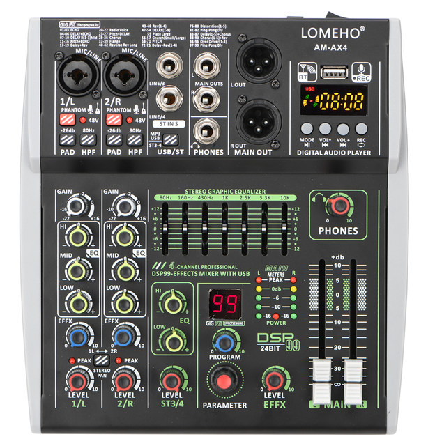
Selling Point
1. Power supply: DC 12V 2A
2. 4/6 Channel mixing console(2/4 Mono + 1 Stereo with Mono)
3. Bluetooth function
4. 99 DSP Effects
5. USB Play and Record
6. Computer play and record
7. Mobile Broadcast (Podcast)
8. Individual +48V phantom power
9. -26dB PAD and 80Hz HPF function
10. Mini, portable
Difference of AM-AX4 and AM-AX6:
AM-AX4: 2 Mono + 1 Stereo
AM-AX6: 4 Mono + 1 Stereo
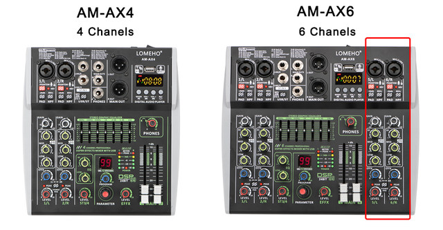
Power supplyDC 12V 2A, EU plug
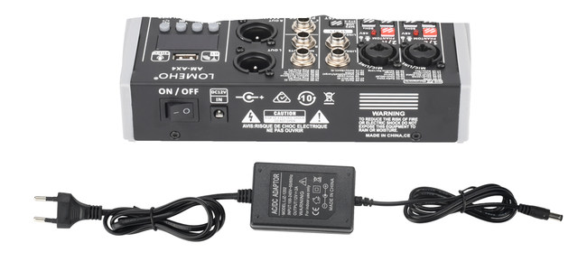
4 Channels1). CH1/2/5/6 are Mono channels, CH3/4 is stereo channel
2). For signal from CH1/2/5/6, L/R of main out will output same signal
3). For signal from CH3, L of main out will output the signal, R will not output signal
4). For signal from CH4, R of main out will output the signal. L will not output signal
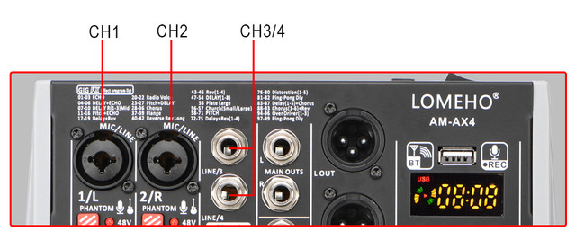
Common unconnectable input devicesFor these device, mixer can not supply working power, device can not work normal though you use plug adapters
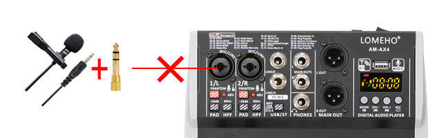
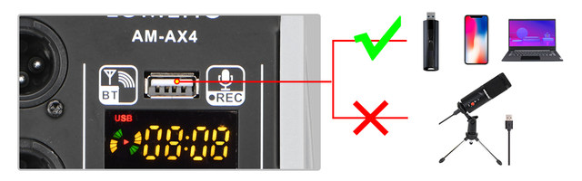
Bluetooth function1. Mixer only can accept bluetooth signal, it can not send out bluetooth signal
2. After pairing, please press down "ST3-4/USB MP3" button, then you can adjust the signal from CH3/4 to main output
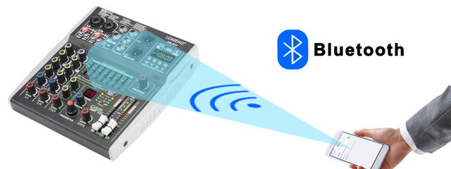
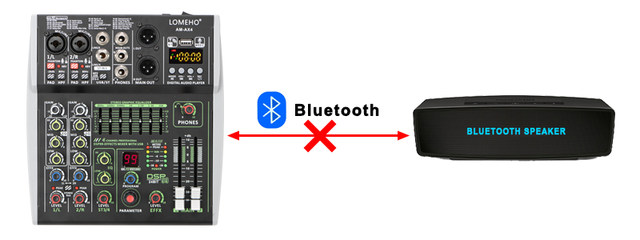
99 DSP Effects
1. Parameter: Choose effect
2. Program: Adjust parameter
3. Level: Adjust the output level
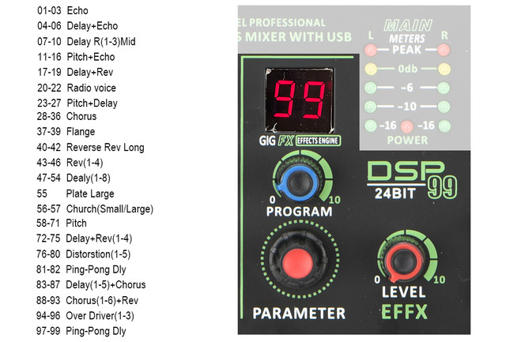
Connection with U-Disk(U-Disk is not included,buyer need buy it by himself)
1. U-Disk format: FAT32 ( Do not support NTFS)
2. Play format: MP3, WMA,WAV,FLAC
3. Record format: MP3
(Before recording, please copy a song in the U disk, otherwise, the disk may not be possible to record
4. Sampling frequency: 16 Bit 48KHz
5. Please press down "ST3-4/USB MP3" button, then you can adjust the signal from CH3/4 to main output
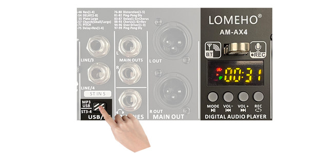
Connection with PC(USB cable is not included, buyer need buy it by himself)
1. Computer play
Buyer downloads music play software, and choose mixer as speaker. Then computer music signal will come into mixer
Please press down "ST3-4/USB MP3" button, then you can adjust the signal from CH3/4 to main output.
2. Computer record
Buyer downloads music record software, choose mixer as microphone. Then mixer signal will come into computer
3. Please note, you conly can record MONO music
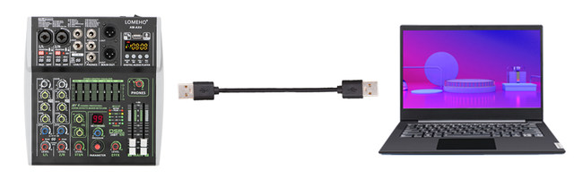
Mobile broadcast (Podcast)
Please note:Buyer need buy OTG by himself
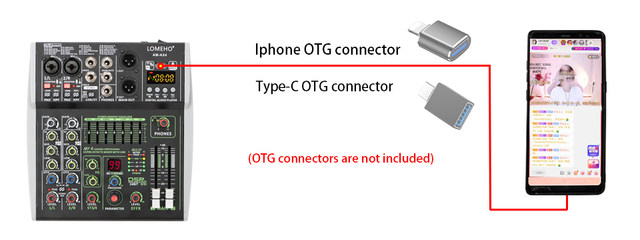
Individual +48V phantom power
1. Phantom power is only for XLR socket
2. You can use +48V condenser microphone and dynamic microphone through XLR socket at same time
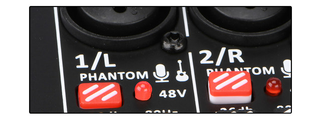
3. Connection with dynamic microphone1) We recommend using XLR cable to connect mic to mixer. If you use 6.3 plug,the volume will be small)
2) please do not power on +48V phantom power, otherwise the power maybe burn the dynamic microphone
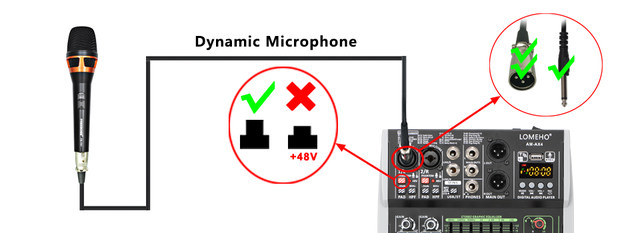
4. Connection with +48V condenser microphone1) If your condenser microphone supports +48V, please power on +48V phantom power
2) If your ocndenser microphone does not supports +48V, you can not use the microphone
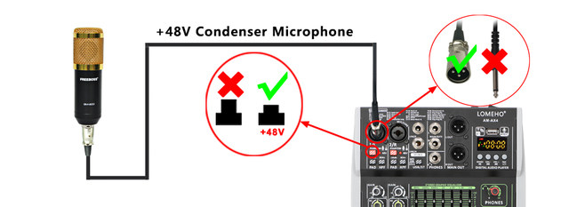
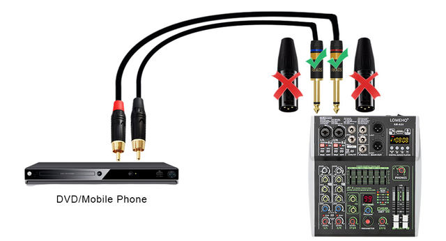
PAD Button （26dB)
It will attenuate the sound input to the device when turn on this switch. You can turn on the switch if you hear the distortion or [PEAK] light is on
HPF Buttoon (80Hz)
High Pass Filter, cuts bas frequencies below 80Hz
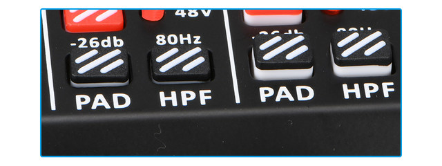
Gain knob1. Adjust the input signal level
2. To get the best balance between the S/N ration and the dynamic range, adjust the gain so that the PEAK indicator only occasionally and briefly on the highest input transients
Peak lightPeak light
Light will be on when the volume of input and or post-equalizer sound is too high. If it is lit, turn the [Gain] knob to the left to lower the volume
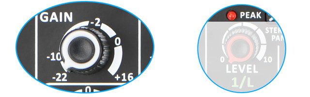
Stereo PanStereo PanButton is bounced up: [MONO]
Sound input to channels 1/L or 2/R can be heard from both the right and left speakers. If you use the 1/L or 2/R individually, set the switch to this setting
Button is pressed down:[STEREO]
Sound input to channel 1/L can be heard from only the left speaker , and the sound input to channel 2/R can be heard from only the right speaker
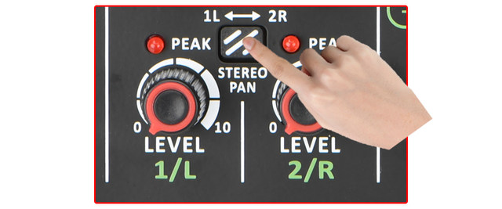
ST3-4/USB MP3ST3-4/USB MP3Line input signals : Button is bounced up
U-disk/bluetooth/pc input signals: Button is pressed down
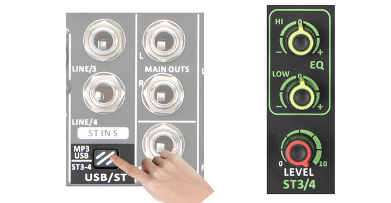
Headphone volume control1. [LEVEL PHONES] Knob can adjust the volume of headphone
2. [MAIN OUT] fader do not control the volume of the headphone
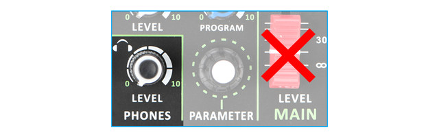
Stereo 3/4 (L/MONO)Stereo 3/4 (L/MONO)Stereo 3/4 (L/MONO)Stereo 3/4 (L/MONO)For connecting to Line-level devices such as an electric keyboard or an audio device
Channel 3 is a L/Mono channel
1) Only input signal to channel 3, main output will output CH3's signal to left and right channels
2) Only input signal channel 4, the main output will output CH4's signal to right channel
3) Input signals to channels 3/4 at the same time, the main output will output CH3's signal to left channel and CH4's signal to right channel
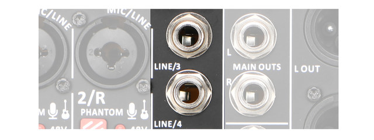
Packing1. Packing list:
Audio mixer 1 pc
Power adapter 1 pc
Manual 1 pc
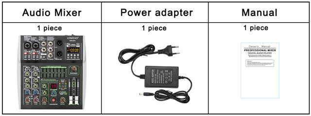
2. Size and packing
AM-AX4
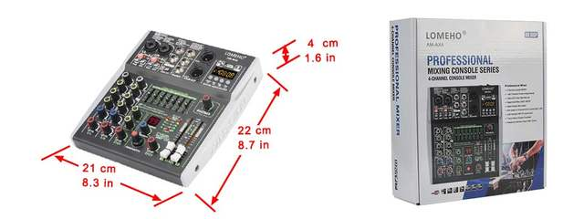
AM-AX6 Details and packing
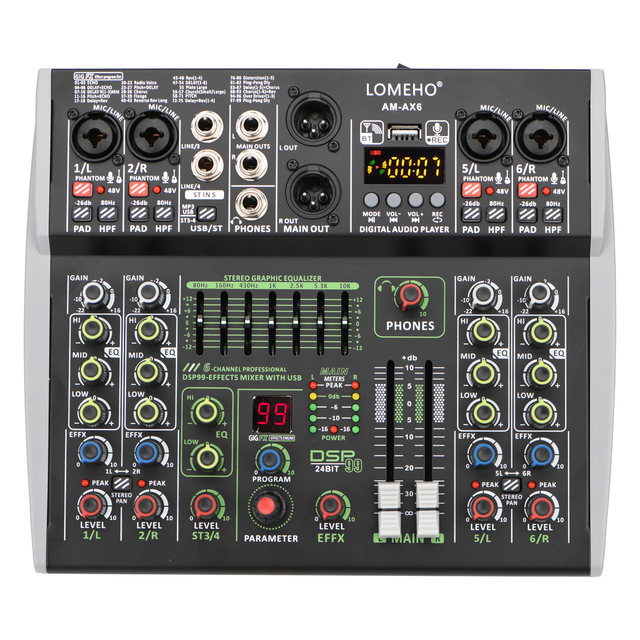
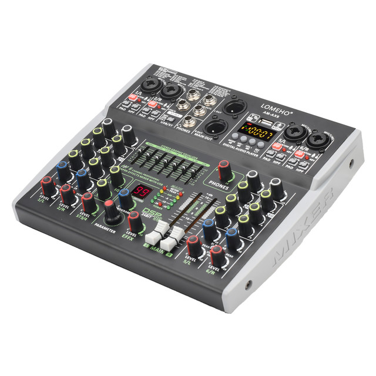
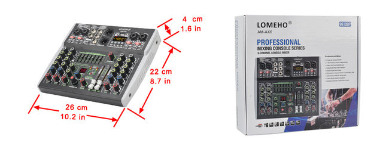